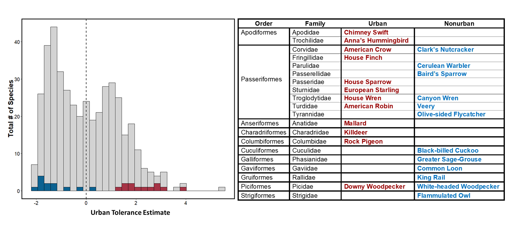
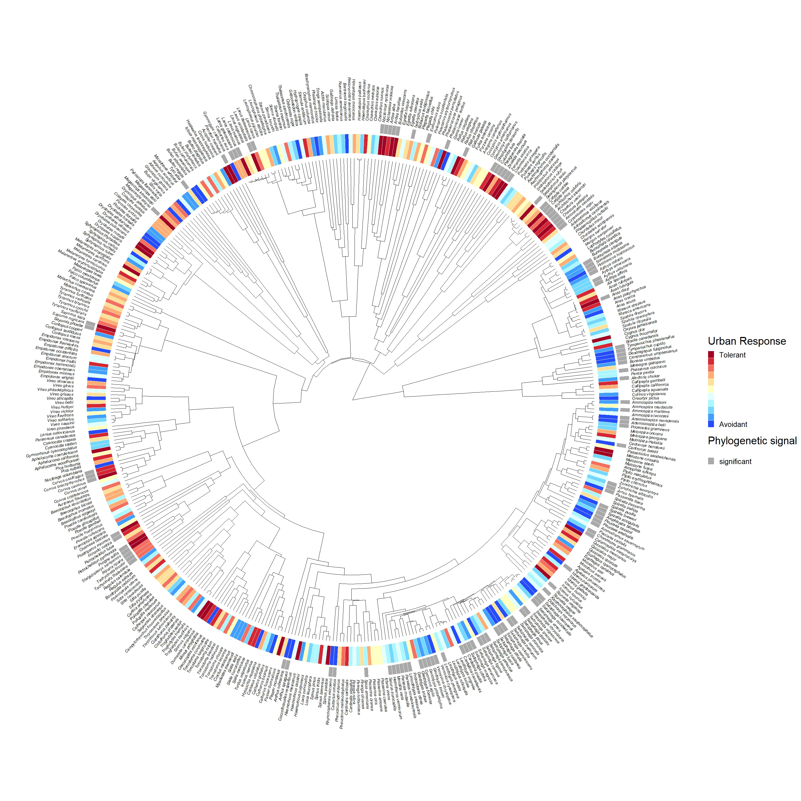

Avian biodiversity in urban habitats
I used novel methods to quantify species-level tolerance to urban
habitat in North American birds using eBird Status and Trends data and
geospatial urban landscape datasets. These methods allowed me to develop
a continuous estimate that captures species’ tolerance to urban habitat
across their breeding ranges in the United States and Canada for 432
species.

Distribution of urban tolerance scores for 432 North American bird
species spanning 19 orders and 60 families. The continuous urban
tolerance estimate distinguished species known for their urban-tolerance
or urban-avoidance quite well. Bar colors denote focal test species:
urban (red, n=12), nonurban (blue, n=12), and all other species (grey,
n=408). Test species were selected based on summaries available on the
Birds of the World Database. The dashed line denotes the mean urban
tolerance estimate.
I also assessed the relative contribution of phylogeny on the
continuous urban tolerance estimate and detected a phylogenetic signal
that was distributed across the phylogeny and across the full range of
urban tolerance estimates.

Phylogenetic tree of 432 species with urban tolerance estimates.
High values indicate a greater tolerance of urban habitats (red), and
low values indicate avoidance of urban habitats (blue). The continuous
urban tolerance estimate is illustrated across 11 levels to facilitate
visualization. The presence of a grey bar indicates species that
contributed to the phylogenetic signal that was detected. (click on
image to enlarge)
{kind=link}